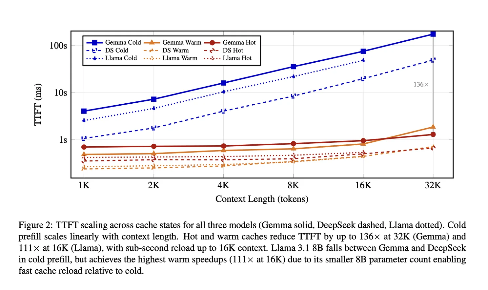
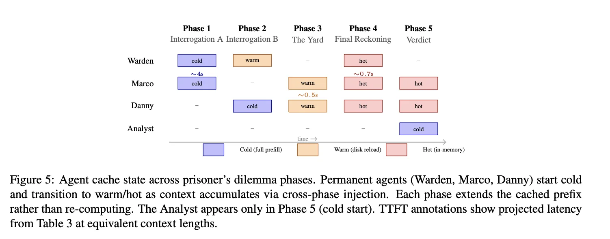
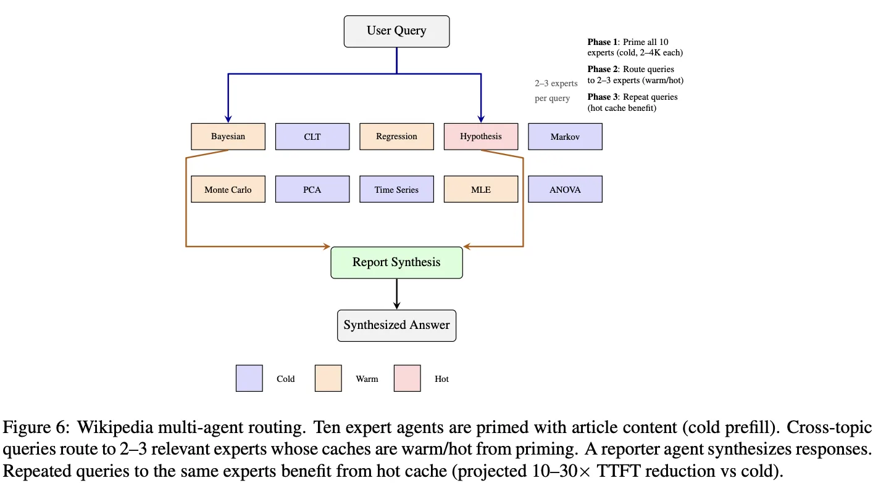

Even two years ago, running serious AI at speed required a server room. That's no longer true. The machine on your desk: the Mac Mini, the MacBook (or DGX Spark), has compute power that would have been exotic research hardware in 2020. I wanted to find out what becomes possible once you actually take that seriously.
My paper, submitted two weeks ago, tests one specific answer: running teams of AI agents on a home machine at speeds that, practically speaking, feel like a professional server.
The problem I had to solve first: every time an AI agent comes back to a conversation, it re-reads everything from scratch. With a 12-billion parameter model and a few thousand words of context, that takes 15 seconds per agent. Five agents, back to back, and you've spent over a minute doing nothing before a single useful word appears. On a data center machine with a hundred servers working in parallel and an extremely large VRAM, this is a minor annoyance. On your laptop, it's a wall.
The fix is a trick called latency hiding for KV cache offloading. I save each agent's memory state to the hard drive in a compressed format. When the agent picks up again, it reloads from disk instead of re-reading everything — and that reload happens in the background while the previous agent is still working. By the time the first agent finishes, the second is ready. The speedup at long conversations is 130 times.

To show this working in practice, the paper runs a five-phase prisoner's dilemma: a warden interrogates two suspects separately, the suspects confer in the yard, everyone meets for a final reckoning, and an analyst renders a verdict. Each character is a separate agent with its own persistent memory. Rather than forgetting everything between phases, they remember. You can see the accumulated benefit in the numbers and in how the scenario actually plays out.

There's a second idea in the paper I'm more excited about long term. The same persistence means an agent doesn't have to disappear between sessions. You can come back to one you ran three weeks ago and pick up where you left off, as if it never went to sleep. That's a different relationship with AI tools than most people have today.

On that note: DeepSeek and collaborators at Peking University published a paper (arxiv.org/abs/2602.21548) after mine (which is stuck in a queue on Arxiv) with a related insight — that moving AI memory around is the real bottleneck, not the math itself. Their approach uses idle network cards on server clusters to double inference throughput on a 660-billion parameter production model. Genuinely interesting work. The difference is that it targets rooms full of GPU hardware. This paper targets the machine on your desk.
The code is open source: github.com/yshk-mxim/agent-memory. There's a demo app there if you want to see it running. And if you know anybody at Apple; this runs on their ML framework, and building it into their standard tooling would let people use it without writing a line of code.
Agent Memory Below the Prompt: Persistent Q4 KV Cache for Multi-Agent LLM Inference on Edge Devices [Agent Memory Below the Prompt: Persistent Q4 KV Cache for Multi-Agent LLM Inference on Edge Devices]